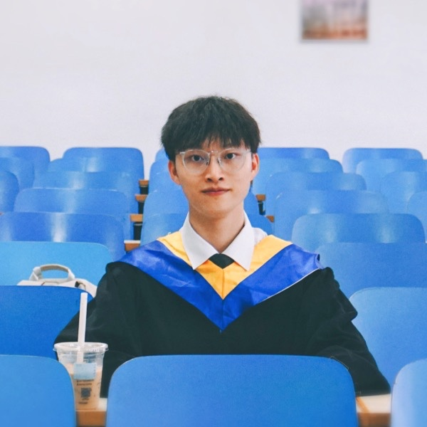

Yuchen Zhou (周昱臣)
Senior Researcher at Tencent Robotics X Lab
I am currently a Senior Researcher at Tencent Robotics X Lab. I received my Ph.D. from Sun Yat-sen University in 2026, supervised by Prof. Chao Gou and Prof. Guang Tan. I was also a joint Ph.D. student at the School of Computing, National University of Singapore, supervised by Prof. Tat-Seng Chua.
Previously, I was a research intern at ByteDance and Shanghai AI Lab. I graduated with an honors Bachelor's degree from University of Science and Technology Beijing in 2021, and was a short-term visiting student at Peking University.
Interns. Actively looking for self-motivated interns to work with us on multimodal / embodied AI. Please feel free to drop me an email.
Collaboration. Always open to research collaborations on related research topics. Welcome to reach out!
Research interests
My research aims to enable AI agents to perceive and interact with the multimodal physical world, and to engage in user-friendly and efficient interaction with humans. Drawing inspiration from human cognitive processes, prior knowledge, and gaze patterns, I guide AI models in tackling downstream tasks. My recent research interests include vision-language models, embodied foundation models, and human-robot interaction.
News
- Jul 2026 We release Hy-Embodied-VLM-1.0, an efficient Mixture-of-Experts vision-language foundation model for embodied agents.
- Jun 2026 I Receive my Ph.D. from Sun Yat-sen University. Awarded the Outstanding Graduate and the Outstanding Doctoral Dissertation.
- May 2026 One paper on Spatial Intelligence (SpatialSV) is accepted by IJCAI 2026.
- Feb 2026 One paper is accepted by Pattern Recognition.
- Dec 2025 Two papers are accepted by IEEE T-ITS and IEEE ITSM, respectively.
- Dec 2025 Two papers are accepted by ICASSP 2026.
- Nov 2025 Two papers on Logical Reasoning (Logic Unseen) and RAG (WebFilter) are accepted by AAAI 2026, including one oral.
- Sep 2025 Invited to give a talk about Multi-Modal Interaction Understanding in CSIG Conference on Young Scientists.
- Sep 2025 One paper on Brain Foundation Model (CSBrain) is accepted by NeurIPS 2025 Spotlight (Top 3%).
- Jun 2025 One paper on Explainable Cognitive Driving (W3DA&Llada) is accepted by ICCV 2025 Highlight (Top 3%).
- Apr 2025 One paper is accepted by IEEE T-CSVT.
- Mar 2025 One paper is accepted by ICME 2025.
- Mar 2025 Invited to give a talk about Cognitively-Inspired Interaction Understanding in CSIG Sharing Forum.
- Jan 2025 Supported by the CAST Young Elite Scientists Sponsorship Program (首批中国科协青年人才托举工程-博士生专项).
- Dec 2024 Received the National Scholarship for Doctoral Students.
- Sep 2024 Received the Principal's Special Scholarship of SYSU again this year (Top 1).
- Sep 2024 One paper is accepted by IEEE ITSM.
- Jun 2024 Attended CVPR 2024 in Seattle, US, and gave a spotlight talk. Released Interactive Gaze (IG) dataset.
- May 2024 Attended VALSE 2024 in Chongqing, China, and presented a poster.
- Mar 2024 One paper is accepted by IEEE T-IV.
- Mar 2024 One paper is accepted by ICME 2024.
- Feb 2024 One paper is accepted by CVPR 2024.
- Dec 2023 Two papers are accepted by ICASSP 2024.
- Nov 2023 Winner of the ROAD-R Challenge at NeurIPS 2023.
- Oct 2023 One paper is accepted by IEEE T-IM.
- Sep 2023 Received the Principal's Special Scholarship of SYSU (Top 1).
- Aug 2023 One paper is accepted by IEEE T-IV.
- Jul 2023 One paper is accepted by ACM MM 2023.
- Jul 2023 One Chinese invention patent is granted.
- Jul 2023 One paper is accepted by IEEE T-ITS.
- Nov 2022 Received the National Scholarship for Postgraduates.
- Aug 2022 Attended VALSE 2022 in Tianjin, China.
- Jun 2022 Winner of the HOMAGE Competition at CVPR 2022 ActivityNet Challenge.
- Jun 2022 One paper is accepted by IJCAI 2022 Workshop.
- Dec 2021 Undergraduate thesis selected as an outstanding undergraduate thesis of Beijing.
- Aug 2021 Won the national First Prize in University Computer Games Championship 2021.
- Jun 2021 Graduated from USTB, selected as the outstanding graduate of Beijing.
- May 2021 Won the national Second Prize in RoboCup China Open 2021.
- Dec 2020 Received the National Scholarship for undergraduate students.